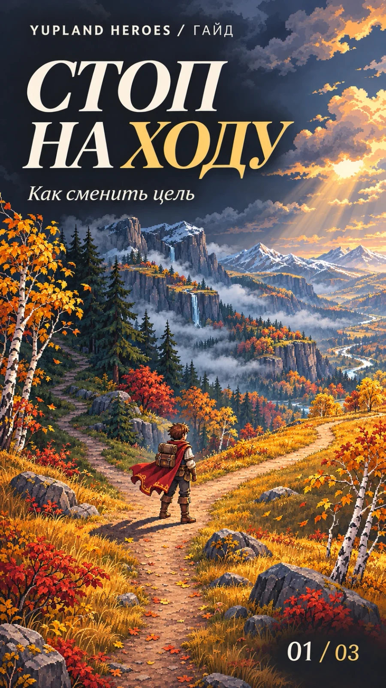
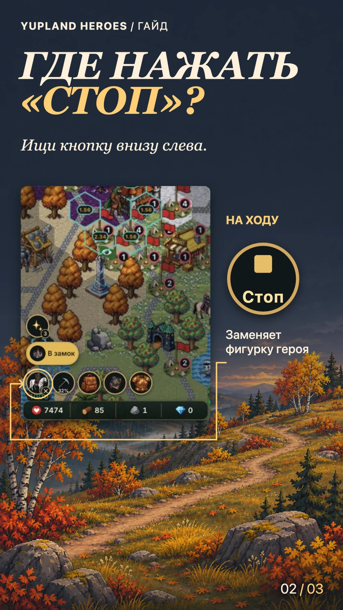
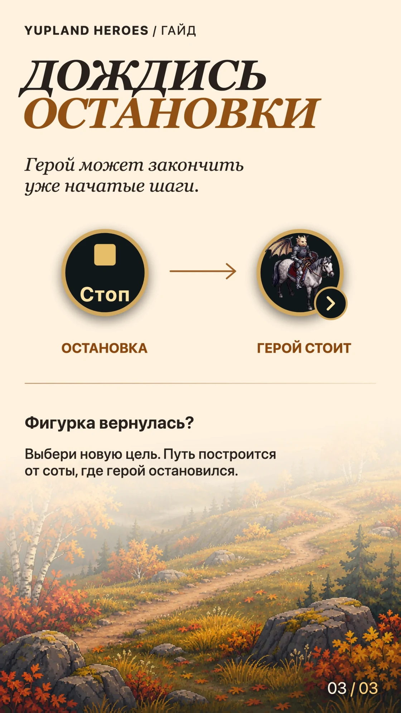

Как остановить героя на ходу и сменить цель
-
Обложка 
-
Шаг 01 
-
Шаг 02 
Уже отправила героя, а идти нужно в другое место? Во время движения игра не строит маршрут по тапу на новую соту. Сначала останови героя.
Где найти «Стоп»
Пока герой идёт, круглая кнопка с его фигуркой внизу слева меняется на «Стоп». Нажми её. Камера вернётся к герою, а рядом откроется панель его действий.
Когда выбирать новую цель
Герой может пройти ещё несколько шагов, если они уже были отправлены. За пройденные шаги энергия списывается. Когда на кнопке снова появится фигурка героя, посмотри, на какой соте он остановился, и выбери новую цель. Маршрут построится от этой соты.